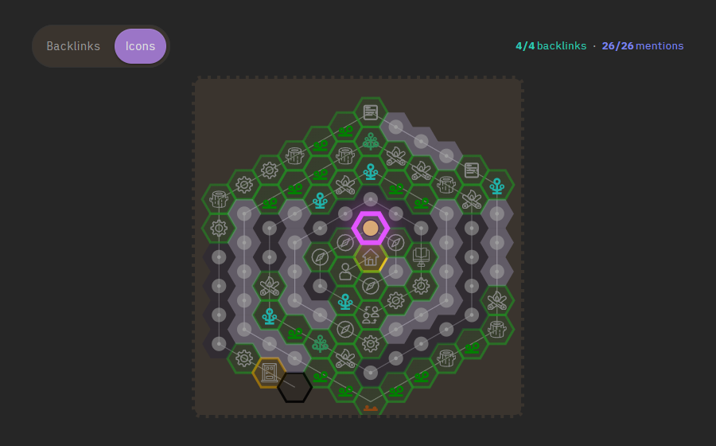
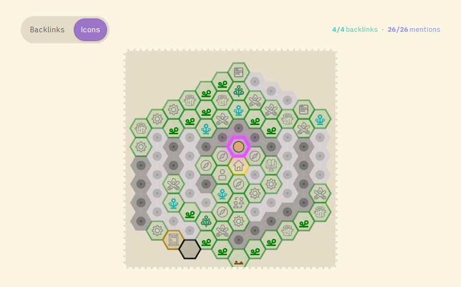

dg-dungeon-map
An interactive hex-grid map of your garden, in the note header.


Turns every published note into a hexagon on a spiral, rendered as a clickable map in your note header. The current page gets a “you are here” marker, and an optional overlay draws lines to that note's backlinks and mentions — all pulled from your Digital Garden's graph.json.
How it works
A post-build script reads your notes (via the sitemap or the notes folder), sorts them by date, builds the π virtual-tile list, and places each on a spiral. It writes a static dungeon-map.svg plus a dungeon-data.json. At runtime, three autoloaded components render the SVG, mark the current hex from the page URL, and draw the graph overlays.
notes → eleventy build → postbuild (π spiral + SVG)
→ dungeon-map.svg + dungeon-data.json
→ header component renders it + marks "you are here"
→ footer script draws backlink / mention overlaysHow to use it
Copy the skill folder into your agent's skills directory, then in your Digital Garden repo ask:
git clone https://github.com/palol/skills-zoo.git
cp -r skills-zoo/skills/dg-dungeon-map ~/.claude/skills/(or ~/.agents/skills/)
Use the dg-dungeon-map skill to add the interactive dungeon map to my digital garden. Verify prerequisites first, install the components and build scripts into user-owned paths, wire the postbuild hook, then build and walk me through verification.
What it touches
- Components (autoloaded, no layout edits): a header slot for the map, a head-slot graph helper, a footer-slot controller.
- Styles: appended to
custom-style.scss; hex & overlay colors inherit your DG theme tokens, so light/dark just work. - Build scripts: two Node scripts in
scripts/+ a hex-spiral helper, run at build time via apostbuildhook.
assets/*.js before wiring the hook. Fully reversible via git.
What's in the box
- SKILL.md — install workflow, prerequisites, design points, risk
- assets/generate-dungeon-data.js — enumerate notes, date-sort, π tile list
- assets/generate-static-dungeon.js — build the SVG (hexes, path, icons)
- assets/hex-spiral.js — axial-coordinate ring-walking spiral
- assets/dungeon.njk — header slot: map container + overlay controls
- assets/aa-graph-helpers.njk — head slot: shared graph.json lookups
- assets/zz-dungeon-map-init.njk — footer slot: current hex + overlays
- assets/dungeon-map.scss — styles (TUNING KNOBS on top)
- references/architecture.md — annotated pipeline + data shapes
- references/tuning.md — every adjustable knob
- references/verify.md — post-build QA checklist
Prerequisites
- An Obsidian Digital Garden (oleeskild plugin + Eleventy) repo with user-component autoloading.
graph.jsonemitted at the site root withbackLinks/outBound/neighbors(overlays degrade gracefully if absent).- Icons in
src/site/img/and anoteIconon notes you want mapped.
Scope is Digital Garden only — the autoloader, theme tokens, and graph.json shape are DG-specific.